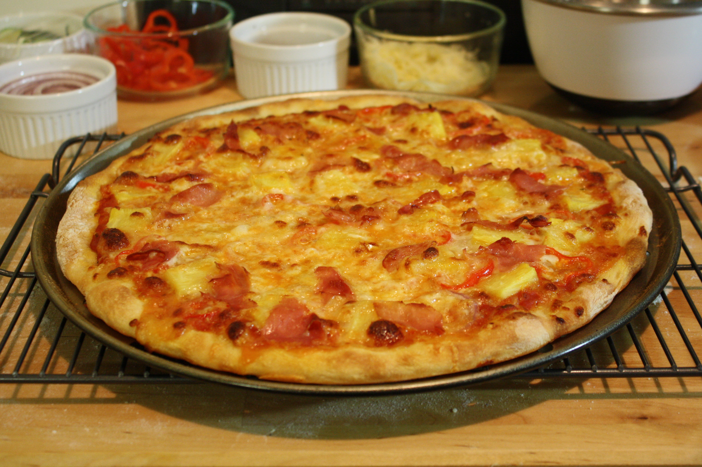

Πίτσα

Υλικά
Για την ζύμη
- 250 γρ. αλεύρι που φουσκώνει μόνο του
- 1 κ.σ βούτυρο η μαργαρίνη σε θερμοκρασία δωματίου
- 1 κ.γ αλάτι
- 1 φλ.τσαγιού χλιαρό γάλα
- 1 κ.γ ξύδι
- 1 πρέζα ζάχαρη
Για την γέμιση
- 2 ντομάτες αποφλοιωμένες χωρίς τους σπόρους και ψιλοκομμένες
- 2 κ.σ ελαιόλαδο
- 1/2 κ.γ ρίγανη και αλάτι
- 2 φλ τσαγιού διάφορα κίτρινα τυριά
- 6 φέτες ζαμπόν
- 1 φλ τσαγιού μανιτάρια κομμένα σε φέτες
- 1 πράσινη πιπεριά κομμένη σε λεπτές φέτες
Εκτέλεση
- Τοποθετούμε όλα τα υλικά για τη ζύμη σε μπολ, εκτός από το αλεύρι.
- Λίγο λίγο προσθέτουμε το αλεύρι και ανακατεύουμε με κουτάλι ή με το χέρι μέχρι να έχουμε μία ζύμη απαλή, ελαστική και εύπλαστη.
- Σε ρηχό, ελαφρώς λαδωμένο, ταψάκι 34 ή 36 εκ. απλώνουμε τη ζύμη με τα δάχτυλα μέχρι να καλύψει όλο το ταψί.
- Σε μπολ ανακατεύουμε τις ψιλοκομμένες ντομάτες με το ελαιόλαδο, το αλάτι και τη ρίγανη.
- Με κουτάλι απλώνουμε την κρύα σάλτσα στη ζύμη.
- Στρώνουμε το ζαμπόν στην πίτσα, πασπαλίζουμε με τα τυριά, απλώνουμε τα μανιτάρια και τέλος γαρνίρουμε με την πιπεριά.
- Ψήνουμε σε καλά προθερμασμένο φούρνο στους 230°C στις αντιστάσεις, πάνω κάτω, στην τελευταία σχάρα, για 20΄ περίπου, μέχρι να ψηθεί η ζύμη και να λιώσουν τα τυριά.
Λίγες ακόμα συμβουλές
Αν θέλετε μπορείτε να βάλετε αντί για ζαμπόν, κοτόπουλο. Πάντως όπως και να είναι, είναι πεντανόστιμη.